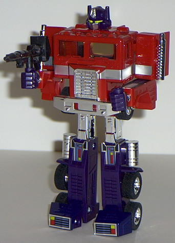
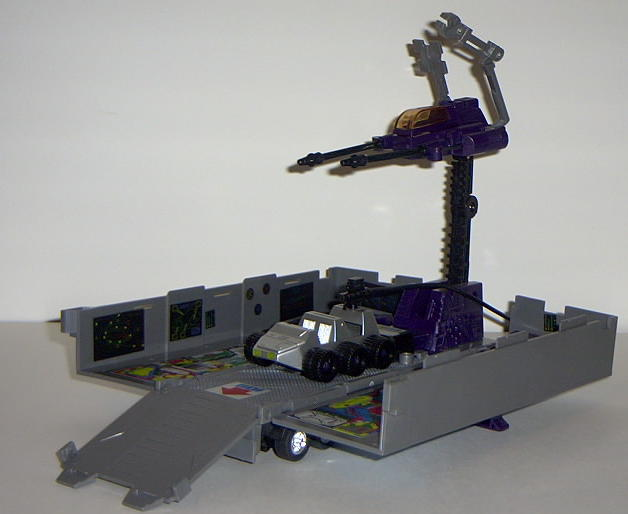
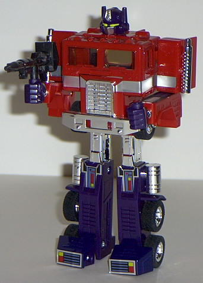
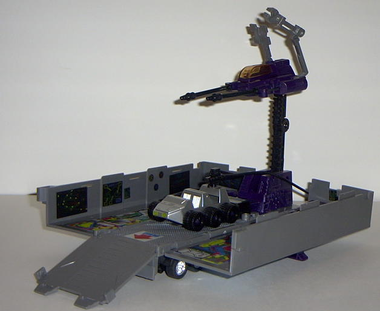

Vehicle mode is a truck,
as you no doubt know by now. And you're probably already familiar with
its looks, too; rather square and boxy, with a grill on the front middle
section of the red-and-blue cab and a large Autobot insignia on the sides
of the trailer. Like nearly all G1 toys, this mode has zero robot extras,
a very realistic look and feel to it, and transparent windows (even though
you can sorta see Prime's head inside said windows). The trailer becomes
separated from the cab portion a bit easier than I'd like, but otherwise
no complaints here.
Prime's cab transforms
into his robot mode. This mode is pretty darn articulated for a G1 toy-
he can move at the shoulders, elbows, feet, knees, and hips (although there's
no forward movement in the latter two areas). Which makes him one of the
few G1 toys you can actually put in a "running" pose. His arms are a bit
wimpy-looking, though, especially when compared to his large chest. His
fists you also just attach to his arms- they're seperate pieces- which
I think is kinda weak, myself. His gun also doesn't fit very well in his
hand- the trigger and the arm meet before it's all the way in its hole.
The diecast metal bits are part of his toes and chest. Oh, and Prime's
shoulder smokestacks have been shortened for safety reasons- it's no big
deal to me, but it is apparently to some people, so it's worth noting.
Prime's trailer converts
into a "base" by splitting apart. Unfortunately, all it really looks like
is... a split-apart trailer. With a weapon thingie coming out of it that
can fire two elongated missiles. And a little moon-rover-esque vehicle
with a gas pump named "Roller". The launching spring has been taken out
as a safety measure for this reissue, however. This base is functional,
but like practically all of Prime's trailer-bases over the years, it ain't
pretty, and it's kinda small to be a base.
Prime's one of the best
early G1 toys, so I can see why they made him the leader of the good guys.
He's well-articulated, has an excellent vehicle mode, and a simple but
effective transformation. Too bad his trailer-base is lame. And asking
$40 for a toy this size is questionable...
Review by Beastbot